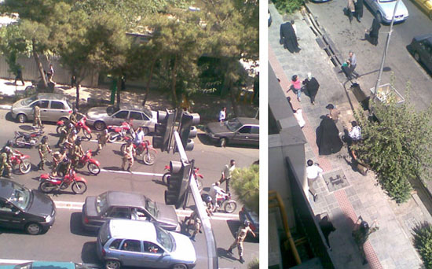

|
|
روایت زنی در میان جمعیت امروز
جمعه26 تیر 1388
تغییر برای برابری - نماز جمعه امروز هم عجب نمازي بود، نه نماز خوني بود ونه نمازگزاري. از ميدان ولي عصر تا انتهاي پارك وي تمام خيابان هاي شمالي جنوبي تا دانشگاه مملو از جمعيت بودو عده اي حتي آن قدرزودتر رفته بودند كه تمام جاهاي خنك وسايه زيرا نداز انداخته و با خيال راحت نشسته بودند... عده زيادي هم سبز بسته بودند.
در بين سخنراني رفسنجاني و حرف هاي او، مردم در مورد بي طرف نبودن شوراي نگهبان شعار ميدادند و دست مي زدند
اما
وقتي صحبت هايش تمام شد، برخی مردمي كه در كنار ما بودند به هم مي گفتند به او امیدی نيست، زناني با صداي بلند مي گفتند: بايد اميدمان به خودمان ومردم باشد نه به هيچ كس. برخی هم تاییدش می کردند.
مردمي كه در ضلع شمالي انقلاب در بلوار كشاورز بودند به طرف خيابان حجاب رفتند. جالب است بدانيد كه در ضلع جنوبي پارك لاله صدها نيروهاي يگان ويژه ايستاده بودند و به مردم نگاه مي كردند و چند نفر هم كه به مردم زل زده بودند صورتشان رابا نقاب پوشانده بودند. مردم به هم مي گفتند اين هاآدم كش هستند، شكنجه گرند.
مردم در خيابان حجاب شعار مي دادند: مرگ بر روسيه؛ مرگ بر چين؛ يا حسين ميرحسين، اله اكبر، ... نيروهاي يگان ويژه فقط مردم را نگاه مي كردند. ولي پنجاه نفري از زنان چادري كه پليس بودند در مدرسه اي كه از لاي ميله هايش من ديدم آماده ايستاده بودند كه اگر دستوري امد به مردم حمله كنندمردم تا به انتهاي خيابان رسيدند و هيچ خبري نبود.
اما عده اي به فاطمي كه رسيدند به طرف اميرآباد رفتند، عده اي هم به طرف ولي عصر وگازاشك آور حمله و باتوم شروع شد:
هزاران نيروي باتوم به دست ولباس شخصي پشت موتورهاي قرمزشان به طرف تظاهرات رفتندودرگيري و گازاشك اور شروع شد كه حتي باد بوي آنرا تا نماز جمعه و خيابان هاي اطراف برد. ولي صحنه اي كه من به چشم ديدم خيلي جالب بود. عده اي زنان چادري كه همه مومن بودند ولي ميگفتند دلمان نميخواست در نماز جمعه شركت كنيم جلوي پاركينگ لاله روبروي درب شمالي پارك لاله ايستاده بودند وشعارميدادند مثل اله اكبر و ياحسين مير حسين و مرگ بر روسيه وچين... اين ها سي يا چهل نفر بابچه هايشان بودندكه مردهايشان در پاركينگ به دنبال ماشين هايشان رفته بودند
كه يكهو نيروهاي يگان ويژه و لباس شخصي ها ريختند و آن هاباور نمي كردند كه آن ها را بزنند. آنها پياده شدند و با باتوم به دنبال زنان چادري و عده اي از مردها مذهبي كه بچه بغل شان بود حمله كردند
و نمي دانيد چه قدر آن ها را زدند وجيغ زن ها شروع شدو حتي چندين گاز اشك آور به طرف آن ها و حتي پارك لاله پرتاب كردند و حتي دو عدد هم به داخل پاركينگ پرتاب كردند كه خانم ها به داخل پاركينگ آمدند درها بسته شد و نميدانيد كه چه غوغايي شد...
من با بعضي از آن ها صحبت كردم. اولين بارشان بود كه به خيابان مي آمدند و گاز اشك آور را لمس كردند. واين خانواده هاي مذهبي اولين تجربه درگيري شان با حكومت بو د.

اين هم عكس من كه نتوانستم بيشتر عكس بگيرم. چون چند نفرشان داد زدند كه از بالا دارند عكس مي گيرند كه من و چند نفرديگر مجبور به فرار شديم.